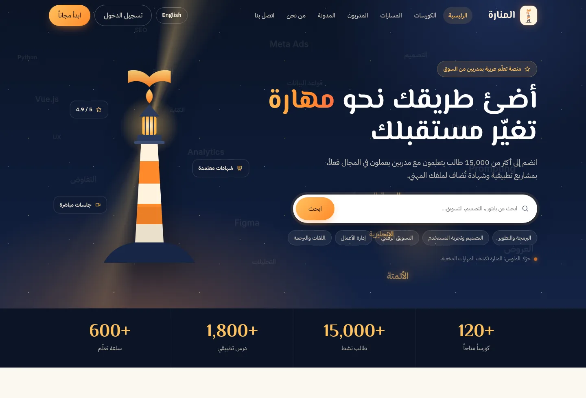
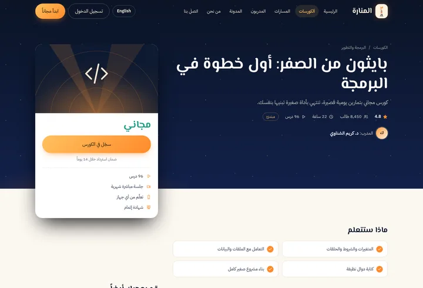
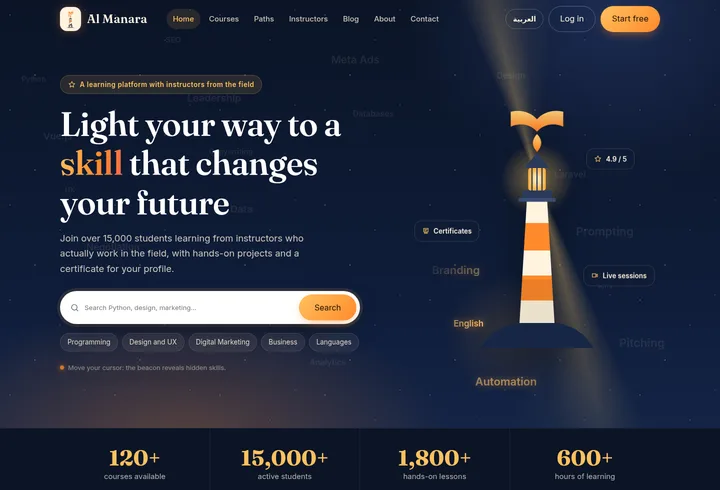
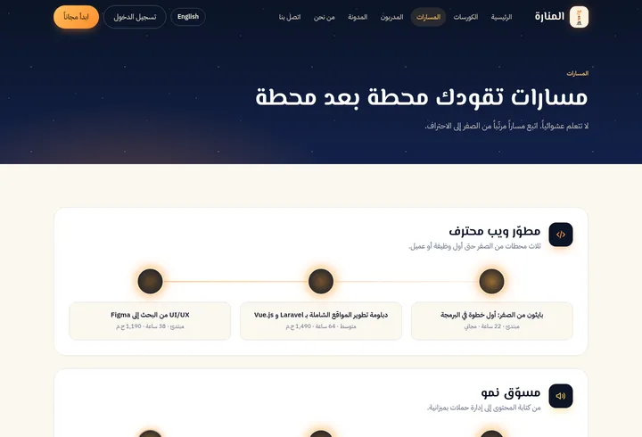
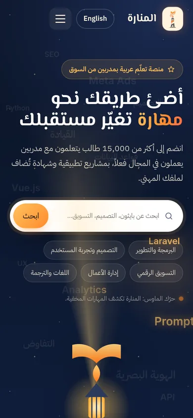

PORTFOLIO DEMO / BUILT / LIVE DEMO
Al Manara
An online courses platform with a searchable catalog, learning paths and instructor pages. Arabic and English.

ACTUAL BUILDAl Manara · Home page. Sample content.
The problem
Someone choosing an online course has to guess: which level fits, what the course covers, who teaches it, and what to take next once it ends.
What was built
A static website with 20 pages in Arabic (right to left) and 20 in English, and a language switch that opens the same page in the other language. It has a home page with a lighthouse hero where a moving beam reveals skill words, a course catalog with live search and filters by category, level and free or paid, nine course pages, learning paths that light up one stop at a time as the visitor scrolls, an instructors page, a blog with three articles, about with an FAQ, contact and login and register pages. Course covers and the certificate are drawn in code. The colors and the lighthouse mark come from the original brief.
Why it matters
A learner can search, filter by level, read what a course covers and follow a path from a first course to a next one, in either language. This is a design for that flow, not a measured result from a real school.
Limits
Student counts, ratings, prices, instructors and articles are sample content. The forms, including login and register, are demos and do not create accounts or take payments. The site loads its fonts from Google Fonts. It was tested in Chrome only.
Inside the build
Open any preview to see the full capture. Captures show demonstration content, not evidence of client use.



